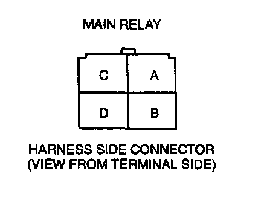
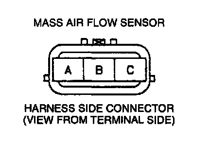
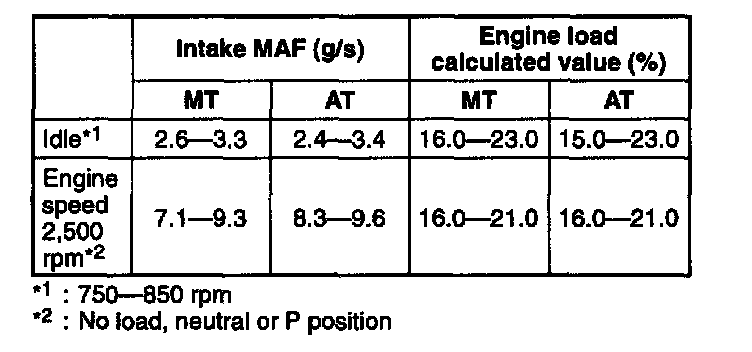

Air Flow Meter/Sensor: Testing and Inspection
NOTE:- Perform the following test only when detected.
1. Visually check for the following on the mass air flow sensor.
- Damage
- Cracks
- Terminal bends
- Terminal rust
2. If any of the above are found, replace the mass air flow sensor. If the above are found okay, but PID value is out of specification, inspect as follows:
Open circuit
- Mass air flow circuit (Mass air flow sensor connector terminal B and PCM connector terminal 2L.)
- Power circuit (Mass air flow sensor connector terminal C and main relay terminal D through common connector.)


- Ground circuit (Mass air flow sensor connector terminal A and PCM connector terminal 3C through common connector.)
Short circuit
- Mass air flow sensor connector terminal B and PCM connector terminal 2L to ground.
- Mass air flow sensor connector terminal C and main relay terminal D through common connector to ground.
3. Reconnect the mass air flow sensor connector.
NOTE:
- The scan tool shows the MAF rate and load value.

Specification